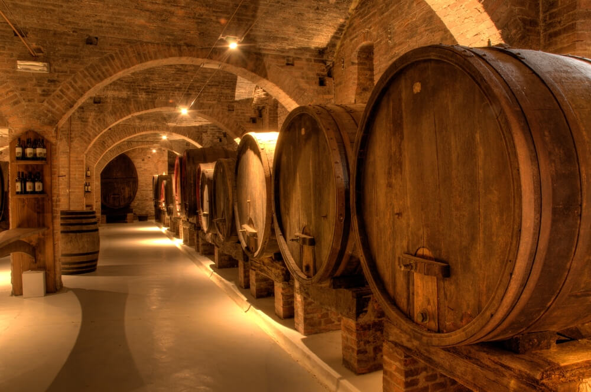

1976
o primeiro Nebbiolo da casa
Gianfranco Bovio assumiu a adega do pai Alessandro nos anos 1970 e reconstruiu tudo do zero. Um ano depois, lançou o primeiro Barolo de vinhedo único da casa: o
Gattera dell'Annunziata
.